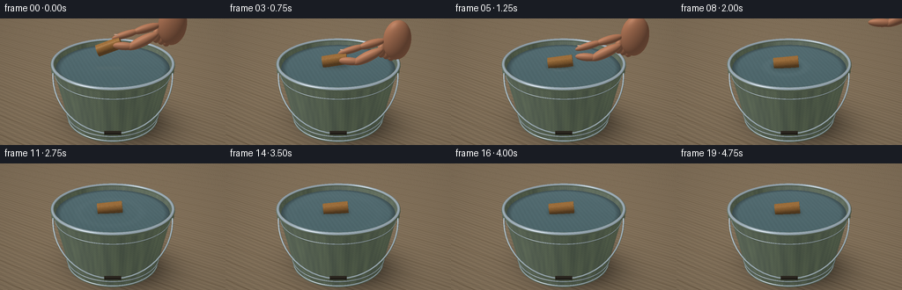
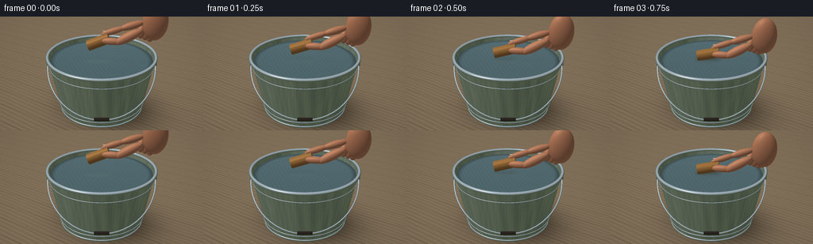

CODING AGENTS AS PIXEL WORLD MODELS
traex/GPT-6.1-Sol · mechanics_0009
点击播放 · 原生 RGB 像素
逐轮保存的候选
回放视频、检查图与代码变化。
每份候选均可单独播放。实际图片检查记录在下方工具轨迹中。
候选 01播放与检查图
点击播放 · 原生 RGB 像素

展开代码变化
--- 上一保存版本
+++ 本次保存版本
@@ -0,0 +1,333 @@
+import json, math
+from pathlib import Path
+import numpy as np
+from PIL import Image, ImageFilter
+import artifact_io
+
+ROOT = Path(__file__).resolve().parent
+SPEC = json.loads((ROOT/'task_spec.json').read_text())
+S=3
+W,H=SPEC['width']*S,SPEC['height']*S
+rng=np.random.default_rng(144)
+
+def unit(v):
+ return v/np.maximum(np.linalg.norm(v,axis=-1,keepdims=True),1e-10)
+def noise(p):
+ return np.sin(p[...,0]*12.31+p[...,1]*37.17+p[...,2]*13.8)*np.sin(p[...,0]*27.7-p[...,1]*19.6+p[...,2]*30.1)
+def smoothnoise(p):
+ return .48*np.sin(p[...,0]*2.81+p[...,1]*3.27+p[...,2]*4.7)+.3*np.sin(p[...,0]*7.91-p[...,1]*5.8+p[...,2]*2.1)+.22*np.sin(p[...,0]*15.31+p[...,1]*11.2-p[...,2]*8.1)
+
+# A fixed close-up camera with a view down into the bucket.
+cam=np.array([2.65,-4.5,3.45])
+target=np.array([0,0,.74])
+fwd=unit(target-cam); right=unit(np.cross(fwd,[0,0,1])); up=np.cross(right,fwd)
+y,x=np.mgrid[0:H,0:W]
+xx=(x+.5-W/2)/W; yy=-(y+.5-H/2)/W
+D=unit(fwd+xx[...,None]*right*0.66+yy[...,None]*up*.66).astype(np.float32)
+O=np.broadcast_to(cam,D.shape).astype(np.float32)
+LIGHT=unit(np.array([-3.,-4.,7.]))
+
+# Analytic ray intersections: no outside rendering library is used.
+def sphere(o,d,c,r):
+ v=o-c; b=np.sum(v*d,axis=-1); q=b*b-np.sum(v*v,axis=-1)+r*r
+ t=-b-np.sqrt(np.maximum(q,0)); t=np.where((q>=0)&(t>.0001),t,np.inf)
+ p=o+d*np.where(np.isfinite(t),t,0)[...,None]
+ return t, unit(p-c)
+
+def ellipsoid(o,d,c,axes,rot=None):
+ if rot is None: rot=np.eye(3)
+ v=(o-c)@rot; rd=d@rot
+ v=v/axes; rd=rd/axes
+ a=np.sum(rd*rd,axis=-1); b=np.sum(rd*v,axis=-1); q=b*b-a*(np.sum(v*v,axis=-1)-1)
+ t=(-b-np.sqrt(np.maximum(q,0)))/a
+ t=np.where((q>=0)&(t>.0001),t,np.inf)
+ lp=v+rd*np.where(np.isfinite(t),t,0)[...,None]
+ n=unit((lp/axes)@rot.T)
+ return t,n,lp
+
+def cylinder(o,d,a,b,r,cap=True):
+ axis=unit(b-a); v=o-a
+ da=np.sum(d*axis,axis=-1); va=np.sum(v*axis,axis=-1)
+ dp=d-da[...,None]*axis; vp=v-va[...,None]*axis
+ A=np.sum(dp*dp,axis=-1); B=np.sum(vp*dp,axis=-1); C=np.sum(vp*vp,axis=-1)-r*r
+ disc=B*B-A*C; t=(-B-np.sqrt(np.maximum(disc,0)))/np.maximum(A,1e-8)
+ z=va+t*da; length=np.linalg.norm(b-a)
+ t=np.where((disc>=0)&(t>0)&(z>=0)&(z<=length),t,np.inf)
+ p=v+d*np.where(np.isfinite(t),t,0)[...,None]
+ n=unit(p-np.sum(p*axis,axis=-1)[...,None]*axis)
+ which=np.zeros(t.shape,dtype=np.int8)
+ if cap:
+ for j,zc in enumerate([0,length]):
+ tc=(zc-va)/np.where(abs(da)>1e-8,da,1e-8)
+ cp=v+tc[...,None]*d-zc*axis
+ valid=(tc>0)&(np.sum(cp*cp,axis=-1)<=r*r)&(tc<t)
+ t=np.where(valid,tc,t); n=np.where(valid[...,None],axis*(1 if j else -1),n)
+ which=np.where(valid,j+1,which)
+ return t,n,which
+
+def cone(o,d,r0,k,zmin,zmax):
+ v=o.copy(); v[...,2]-=zmin
+ rz=r0+k*v[...,2]
+ A=d[...,0]**2+d[...,1]**2-(k*d[...,2])**2
+ B=v[...,0]*d[...,0]+v[...,1]*d[...,1]-rz*k*d[...,2]
+ C=v[...,0]**2+v[...,1]**2-rz*rz
+ disc=B*B-A*C
+ best=np.full(D.shape[:2],np.inf,dtype=np.float32); norm=np.zeros_like(D)
+ for sign in [-1,1]:
+ t=(-B+sign*np.sqrt(np.maximum(disc,0)))/A
+ zz=o[...,2]+t*d[...,2]
+ valid=(disc>=0)&(t>0)&(zz>=zmin)&(zz<=zmax)&(t<best)
+ p=o+d*np.where(valid,t,0)[...,None]
+ nn=unit(np.stack([p[...,0],p[...,1],-k*np.sqrt(p[...,0]**2+p[...,1]**2)],-1))
+ best=np.where(valid,t,best); norm=np.where(valid[...,None],nn,norm)
+ return best,norm
+
+def torus(o,d,z,major,minor):
+ t=(z+minor-o[...,2])/d[...,2]
+ active=(t>0)
+ best=np.full(t.shape,np.inf)
+ for _ in range(42):
+ p=o+d*t[...,None]
+ rr=np.sqrt(p[...,0]**2+p[...,1]**2)
+ sd=np.sqrt((rr-major)**2+(p[...,2]-z)**2)-minor
+ hit=active&(sd<.00015)
+ best=np.where(hit,t,best)
+ active=active&~hit&(p[...,2]>z-minor-.003)&(t<20)
+ if not np.any(active):break
+ t+=np.where(active,np.maximum(sd,.0001),0)
+ p=o+d*np.where(np.isfinite(best),best,0)[...,None]
+ rr=np.sqrt(p[...,0]**2+p[...,1]**2)
+ n=unit(np.stack([p[...,0]*(1-major/np.maximum(rr,.01)),p[...,1]*(1-major/np.maximum(rr,.01)),p[...,2]-z],-1))
+ return best,n
+
+
+def environment(r):
+ # Soft sky and out-of-focus greenery, reflected by the polished wet surfaces.
+ z=r[...,2]; blend=np.clip((z+.04)*3,0,1)
+ green=np.stack([.27+.055*smoothnoise(r*4),.34+.06*smoothnoise(r*4),.20+.03*smoothnoise(r*4)],-1)
+ sky=np.broadcast_to([.69,.79,.86],r.shape).copy()
+ col=green*(1-blend[...,None])+sky*blend[...,None]
+ patch=np.exp(-((r[...,0]+.48)**2+(r[...,1]+.43)**2+(r[...,2]-.74)**2)/.11)
+ return col+patch[...,None]*.18
+
+def shade(p,n,albedo,metal=False,skin=False):
+ dif=np.maximum(np.sum(n*LIGHT,axis=-1),0)
+ eye=unit(cam-p); half=unit(LIGHT+eye)
+ if metal:
+ refl=2*np.sum(n*eye,axis=-1)[...,None]*n-eye
+ env=environment(refl)
+ spec=np.maximum(np.sum(n*half,axis=-1),0)**90
+ return albedo*(.36+.42*dif[...,None])*.6+env*.47+spec[...,None]*.48
+ spec=np.maximum(np.sum(n*half,axis=-1),0)**(28 if skin else 55)
+ fill=.43+.53*dif
+ if skin: fill+=.09*np.maximum(-np.sum(n*LIGHT,axis=-1),0)
+ return albedo*fill[...,None]+spec[...,None]*(.07 if skin else .08)
+
+# Static background and bucket shell.
+tplane=(-.025-O[...,2])/D[...,2]
+pplane=O+D*tplane[...,None]
+wood=smoothnoise(pplane*np.array([1.6,20,1]))
+grain=np.sin(pplane[...,1]*185+3*np.sin(pplane[...,0]*2.8)+smoothnoise(pplane*9)*2)
+seams=np.exp(-(np.sin((pplane[...,1]+.1)*np.pi/.43)/.024)**2)
+woodcol=np.stack([.48+.045*wood+.012*grain,.41+.04*wood+.009*grain,.32+.032*wood+.008*grain],-1)
+woodcol-=seams[...,None]*.13
+# Wide, soft ambient contact shadow, grounded on the table.
+shadow=.20+.8*(1-np.exp(-((pplane[...,0]-.13)**2/1.3+(pplane[...,1]-.1)**2/.92)*2))
+base=woodcol*shadow[...,None]
+depth=tplane.copy(); watermask=np.zeros((H,W),bool)
+
+def add_static(t,n,kind):
+ global base,depth,watermask
+ valid=t<depth
+ p=O+D*np.where(np.isfinite(t),t,0)[...,None]
+ if kind=='metal':
+ # Mottled zinc grains plus fine vertical scratches.
+ mott=smoothnoise(p*35)*.05+noise(p*53)*.024
+ ang=np.arctan2(p[...,1],p[...,0])
+ streak=np.sin(ang*421+smoothnoise(p*4)*.4)*.008
+ alb=np.stack([.59+mott+streak,.63+mott+streak,.65+mott+streak],-1)
+ col=shade(p,n,alb,True)
+ bands=1-.12*np.exp(-((p[...,2]-.18)/.017)**2)-.09*np.exp(-((p[...,2]-.95)/.012)**2)
+ col*=bands[...,None]
+ else:
+ col=shade(p,n,np.broadcast_to([.45,.49,.51],p.shape),True)
+ base=np.where(valid[...,None],col,base);depth=np.where(valid,t,depth)
+ watermask[valid]=False
+
+k=.20/1.07
+for inside in [False,True]:
+ t,n=cone(O,D,.795-(.026 if inside else 0),k,.06,1.13)
+ if inside:n=-n
+ add_static(t,n,'metal')
+
+# Water's surface sits slightly below the rolled upper rim.
+waterz=1.048
+tw=(waterz-O[...,2])/D[...,2]; pw=O+D*tw[...,None]
+wm=(pw[...,0]**2+pw[...,1]**2<.95**2)&(tw<depth)
+watermask=wm.copy();depth=np.where(wm,tw,depth)
+# Rolled lips give the bucket a robust manufactured silhouette.
+for z,rad,thick in [(1.13,.995,.032),(.077,.797,.019),(.178,.818,.013),(.95,.962,.010)]:
+ t,n=torus(O,D,z,rad,thick); add_static(t,n,'metal')
+
+# The thin bail handle rests down the front, attached at two side pivots.
+# Orient the hinge pair along the horizontal axis in the image.
+rvec=right.copy(); rvec[2]=0;rvec=unit(rvec)
+fvec=np.array([cam[0],cam[1],0]);fvec=unit(fvec)
+for sgn in [-1,1]:
+ c=rvec*1.0*sgn;c[2]=.93
+ t,n,_=ellipsoid(O,D,c,[.04,.04,.065]);add_static(t,n,'metal')
+pts=[]
+for a in np.linspace(0,np.pi,28):
+ p=rvec*1.01*np.cos(a)+fvec*.88*np.sin(a);p[2]=.94-.66*np.sin(a);pts.append(p)
+for a,b in zip(pts[:-1],pts[1:]):
+ t,n,_=cylinder(O,D,a,b,.014)
+ add_static(t,n,'metal')
+# Small dark turned grip at the bottom of the handle.
+t,n,_=cylinder(O,D,pts[12]-rvec*.045,pts[15]+rvec*.045,.029)
+valid=t<depth;p=O+D*np.where(np.isfinite(t),t,0)[...,None]
+col=shade(p,n,np.broadcast_to([.17,.15,.12],p.shape))
+base=np.where(valid[...,None],col,base);depth=np.where(valid,t,depth);watermask[valid]=False
+
+# Cork texture: irregular tiny pores, generated in its own coordinates.
+pores=rng.uniform(-1,1,(145,3)); pore_r=rng.uniform(.009,.034,145)
+
+# Fixed cork position near the center, with its long axis almost screen-horizontal.
+axis0=unit(right*.99+np.array([0,0,.11]))
+center0=np.array([-.045,-.04,waterz+.064])
+
+def cork_material(p,c,axis,tags,n):
+ rel=p-c
+ u=np.sum(rel*axis,axis=-1)
+ e1=unit(np.cross(axis,[0,0,1])); e2=np.cross(axis,e1)
+ v=np.sum(rel*e1,axis=-1); w=np.sum(rel*e2,axis=-1)
+ loc=np.stack([u,v,w],-1)
+ m=smoothnoise(loc*90)*.052+noise(loc*230)*.025
+ alb=np.stack([.66+m,.45+m*.82,.23+m*.55],-1)
+ # End-grain of the flat cork end: slightly lighter with concentric irregular structure.
+ radial=np.sqrt(v*v+w*w)
+ rings=np.sin(radial*360+smoothnoise(loc*80)*2)*.017
+ ends=tags>0
+ alb+=ends[...,None]*np.stack([.09+rings,.075+rings,.045+rings],-1)
+ # High frequency porous grain, stable from frame to frame.
+ hashval=np.sin(np.floor(u*720)*12.9898+np.floor(v*720)*78.233+np.floor(w*720)*34.71)*43758.5453
+ fleck=hashval-np.floor(hashval)
+ alb-=np.where(fleck>.92,(fleck-.92)*1.15,0)[...,None]
+ poresignal=np.sin(u*205+w*81)*np.sin(v*176-u*39)*np.sin(w*193+v*65)
+ alb-=np.maximum(poresignal-.61,0)[...,None]*.25
+ return shade(p,n,np.clip(alb,0,1))
+
+# Hand modeled with smooth anatomical fingertip forms and nails. It enters from
+# the right and withdraws after the cork makes contact with the surface.
+def basis_for(axis):
+ a=unit(axis);b=unit(np.cross(a,[0,1,0]));c=np.cross(a,b)
+ return np.stack([b,c,a],1)
+
+def render(frame):
+ time=frame/SPEC['fps']
+ release=.95
+ settle=max(time-release,0)
+ c=center0.copy()
+ c[2]+=(max(0,1-time/release)**1.25)*.28
+ c[:2]+=np.array([.014,-.009])*settle
+ c[2]+=(.014*np.sin(settle*7)*np.exp(-settle*1.8)) if settle>0 else 0
+ tilt=.28*max(0,1-time/release)+.055*np.sin(settle*4)*np.exp(-settle*1.5)
+ axis=unit(axis0+np.array([0,0,tilt]))
+ a=c-axis*.205;b=c+axis*.205
+ img=base.copy(); zbuf=depth.copy()
+ # Clear cool water with sky and foliage reflections, subtle moving capillary waves.
+ dx=pw[...,0]-c[0];dy=pw[...,1]-c[1]
+ rr=np.sqrt(dx*dx+dy*dy)+1e-5
+ slopex=.007*np.sin(pw[...,0]*10+pw[...,1]*7-time*1.5)
+ slopey=.006*np.cos(pw[...,1]*12-pw[...,0]*5-time*1.2)
+ rip=np.zeros((H,W),np.float32)
+ if settle>=0 and time>=release:
+ for j in range(3):
+ age=settle-j*.16
+ if age>0:
+ radius=.12+age*.25
+ amp=.017*np.exp(-age*.88)*(1-j*.22)
+ g=np.exp(-((rr-radius)/.030)**2)
+ ring=amp*g*np.sin((rr-radius)*100)
+ slopex+=ring*dx/rr;slopey+=ring*dy/rr
+ rip+=g*.024*np.exp(-age*.8)
+ normal=unit(np.stack([-slopex,-slopey,np.ones((H,W))],-1))
+ eye=unit(cam-pw); reflected=2*np.sum(eye*normal,axis=-1)[...,None]*normal-eye
+ env=environment(reflected)
+ fres=.022+.978*(1-np.maximum(np.sum(normal*eye,axis=-1),0))**5
+ # Shallow basin underneath gives clear water depth, not an opaque blue fill.
+ underwater=np.stack([.245+.014*smoothnoise(pw*22),.34+.017*smoothnoise(pw*22),.355+.018*smoothnoise(pw*22)],-1)
+ edge=np.clip((.953-np.sqrt(pw[...,0]**2+pw[...,1]**2))/.10,0,1)
+ underwater*= (.60+.40*edge)[...,None]
+ wc=underwater*(1-fres[...,None])+env*fres[...,None]
+ glint=np.maximum(np.sum(normal*unit(LIGHT+eye),axis=-1),0)**280
+ wc+=glint[...,None]*.3+rip[...,None]
+ # Soft contact reflection/shadow directly beneath the floating cork.
+ along=dx*axis[0]+dy*axis[1];cross=dx*(-axis[1])+dy*axis[0]
+ sh=np.exp(-((along/.22)**6+(cross/.12)**2))*np.exp(-max(c[2]-waterz-.07,0)*14)
+ wc*=1-.33*sh[...,None]
+ # Thin wet reflection, broken up by the ripple field.
+ refl=np.exp(-((along/.21)**8+((cross+.082)/.065)**2))*.075
+ wc+=refl[...,None]*np.array([.24,.15,.055])
+ img=np.where(watermask[...,None],wc,img)
+ # Flat-ended cylinder, lying partially submerged, naturally buoyant.
+ t,n,tags=cylinder(O,D,a,b,.098)
+ p=O+D*np.where(np.isfinite(t),t,0)[...,None]
+ valid=(t<zbuf)&(p[...,2]>=waterz-.001)
+ col=cork_material(p,c,axis,tags,n)
+ # Darker wet band at the waterline.
+ wet=np.clip((waterz+.024-p[...,2])/.027,0,1)
+ col*=1-.22*wet[...,None]
+ img=np.where(valid[...,None],col,img);zbuf=np.where(valid,t,zbuf)
+ # Meniscus closely follows the floating cylinder.
+ # A human hand gently releases the right half of the cork.
+ if time<2.1:
+ withdraw=np.clip((time-1.0)/1.0,0,1)
+ withdraw=withdraw*withdraw*(3-2*withdraw)
+ handshift=right*(withdraw*1.22)+np.array([0,0,withdraw*.70])
+ pinch=c+axis*.12+handshift
+ shapes=[]
+ # Index finger extends toward the object from the upper right.
+ tip=pinch+np.array([-.018,.014,.104])
+ mid=pinch+right*.31+np.array([0,.045,.205])
+ root=pinch+right*.61+np.array([0,.08,.29])
+ palm=pinch+right*.86+np.array([0,.09,.30])
+ shapes.append(('ell',palm,np.array([.34,.16,.23]),basis_for(right),False))
+ for pa,pb,rad in [(mid,root,.068),(tip,mid,.058)]:
+ shapes.append(('ell',(pa+pb)/2,np.array([rad,rad,np.linalg.norm(pb-pa)/2+rad]),basis_for(pb-pa),False))
+ # Thumb opposes the index finger, grasping below on the near-facing side.
+ thumbtip=pinch+fvec*.077+np.array([0,0,.004])
+ thumbmid=pinch+right*.25+fvec*.145+np.array([0,0,.016])
+ thumbroot=pinch+right*.58+fvec*.14+np.array([0,0,.19])
+ for pa,pb,rad in [(thumbtip,thumbmid,.066),(thumbmid,thumbroot,.085)]:
+ shapes.append(('ell',(pa+pb)/2,np.array([rad,rad*.94,np.linalg.norm(pb-pa)/2+rad]),basis_for(pb-pa),False))
+ # Other fingers curl behind the extended index, anatomically distinct.
+ for j in range(3):
+ pos=pinch+right*(.60+j*.072)+np.array([0,.13+j*.034,.10-j*.044])
+ shapes.append(('ell',pos,np.array([.12,.067,.075]),basis_for(right),False))
+ for typ,cc,axes,rot,nail in shapes:
+ ht,hn,lp=ellipsoid(O,D,cc,axes,rot)
+ hp=O+D*np.where(np.isfinite(ht),ht,0)[...,None]
+ hv=ht<zbuf
+ grain=noise(hp*380)*.006+smoothnoise(hp*45)*.012
+ alb=np.stack([.77+grain,.50+grain*.75,.36+grain*.6],-1)
+ hc=shade(hp,hn,alb,skin=True)
+ img=np.where(hv[...,None],hc,img);zbuf=np.where(hv,ht,zbuf)
+ # Pale oval index fingernail placed on top of the fingertip.
+ nc=tip+np.array([0,-.002,.048])+right*.023
+ ht,hn,lp=ellipsoid(O,D,nc,[.050,.029,.009],np.eye(3))
+ hv=ht<zbuf;hp=O+D*np.where(np.isfinite(ht),ht,0)[...,None]
+ nail=shade(hp,hn,np.broadcast_to([.84,.65,.54],hp.shape),skin=True)
+ img=np.where(hv[...,None],nail,img);zbuf=np.where(hv,ht,zbuf)
+ # Subtle lens vignette and photographic tone mapping.
+ vignette=1-.10*((xx/.65)**2+(yy/.5)**2)
+ img=np.clip(img*vignette[...,None],0,1)
+ img=np.power(img,1/1.09)
+ im=Image.fromarray(np.uint8(np.clip(img*255,0,255)))
+ im=im.resize((SPEC['width'],SPEC['height']),Image.Resampling.LANCZOS)
+ return np.asarray(im)
+
+frames=[]
+for i in range(SPEC['frames']):
+ frames.append(render(i))
+ print(f'Generated frame {i+1}/{SPEC["frames"]}',flush=True)
+artifact_io.save(np.asarray(frames,dtype=np.uint8),ROOT)
候选 02播放与检查图
点击播放 · 原生 RGB 像素


展开代码变化
--- 上一保存版本
+++ 本次保存版本
@@ -144,7 +144,7 @@
# Mottled zinc grains plus fine vertical scratches.
mott=smoothnoise(p*35)*.05+noise(p*53)*.024
ang=np.arctan2(p[...,1],p[...,0])
- streak=np.sin(ang*421+smoothnoise(p*4)*.4)*.008
+ streak=np.sin(ang*421+smoothnoise(p*4)*.4)*.002
alb=np.stack([.59+mott+streak,.63+mott+streak,.65+mott+streak],-1)
col=shade(p,n,alb,True)
bands=1-.12*np.exp(-((p[...,2]-.18)/.017)**2)-.09*np.exp(-((p[...,2]-.95)/.012)**2)
@@ -249,7 +249,8 @@
g=np.exp(-((rr-radius)/.030)**2)
ring=amp*g*np.sin((rr-radius)*100)
slopex+=ring*dx/rr;slopey+=ring*dy/rr
- rip+=g*.024*np.exp(-age*.8)
+ rip+=g*.090*np.exp(-age*.5)
+ rip-=np.exp(-((rr-radius-.025)/.015)**2)*.035*np.exp(-age*.65)
normal=unit(np.stack([-slopex,-slopey,np.ones((H,W))],-1))
eye=unit(cam-pw); reflected=2*np.sum(eye*normal,axis=-1)[...,None]*normal-eye
env=environment(reflected)
@@ -261,6 +262,9 @@
wc=underwater*(1-fres[...,None])+env*fres[...,None]
glint=np.maximum(np.sum(normal*unit(LIGHT+eye),axis=-1),0)**280
wc+=glint[...,None]*.3+rip[...,None]
+ # Broad light reflected across the surface makes the water visibly glossy.
+ reflectedlight=np.exp(-((pw[...,0]+.42+.035*np.sin(pw[...,1]*18-time))/.14)**2-((pw[...,1]-.24)/.49)**2)
+ wc+=reflectedlight[...,None]*np.array([.052,.061,.066])
# Soft contact reflection/shadow directly beneath the floating cork.
along=dx*axis[0]+dy*axis[1];cross=dx*(-axis[1])+dy*axis[0]
sh=np.exp(-((along/.22)**6+(cross/.12)**2))*np.exp(-max(c[2]-waterz-.07,0)*14)
@@ -291,8 +295,12 @@
mid=pinch+right*.31+np.array([0,.045,.205])
root=pinch+right*.61+np.array([0,.08,.29])
palm=pinch+right*.86+np.array([0,.09,.30])
- shapes.append(('ell',palm,np.array([.34,.16,.23]),basis_for(right),False))
- for pa,pb,rad in [(mid,root,.068),(tip,mid,.058)]:
+ shapes.append(('ell',palm,np.array([.13,.17,.27]),basis_for(right),False))
+ wrist=palm+right*.30+np.array([0,0,.02])
+ armend=wrist+right*1.15+np.array([0,0,.29])
+ shapes.append(('ell',(palm+wrist)/2,np.array([.12,.135,.28]),basis_for(wrist-palm),False))
+ shapes.append(('ell',(wrist+armend)/2,np.array([.15,.16,np.linalg.norm(armend-wrist)/2+.15]),basis_for(armend-wrist),False))
+ for pa,pb,rad in [(mid,root,.073),(tip,mid,.064)]:
shapes.append(('ell',(pa+pb)/2,np.array([rad,rad,np.linalg.norm(pb-pa)/2+rad]),basis_for(pb-pa),False))
# Thumb opposes the index finger, grasping below on the near-facing side.
thumbtip=pinch+fvec*.077+np.array([0,0,.004])
候选 03播放与检查图
可观测工具轨迹
实际执行的命令与返回图片。
命令 1exit 0
/bin/bash -lc 'ls -la && cat prompt.txt && cat GENERATION_RULES.md && cat task_spec.json'
命令 2exit 0
/bin/bash -lc "cat artifact_io.py && python - <<'PY'
import numpy,PIL
print('ready')
PY"命令 3exit 0
/bin/bash -lc "cat > generate.py <<'PY'
import json, math
from pathlib import Path
import numpy as np
from PIL import Image, ImageFilter
import artifact_io
ROOT = Path(__file__).resolve().parent
SPEC = json.loads((ROOT/'task_spec.json').read_text())
S=3
W,H=SPEC['width']*S,SPEC['height']*S
rng=np.random.default_rng(144)
def unit(v):
return v/np.maximum(np.linalg.norm(v,axis=-1,keepdims=True),1e-10)
def noise(p):
return np.sin(p[...,0]*12.31+p[...,1]*37.17+p[...,2]*13.8)*np.sin(p[...,0]*27.7-p[...,1]*19.6+p[...,2]*30.1)
def smoothnoise(p):
return .48*np.sin(p[...,0]*2.81+p[...,1]*3.27+p[...,2]*4.7)+.3*np.sin(p[...,0]*7.91-p[...,1]*5.8+p[...,2]*2.1)+.22*np.sin(p[...,0]*15.31+p[...,1]*11.2-p[...,2]*8.1)
# A fixed close-up camera with a view down into the bucket.
cam=np.array([2.65,-4.5,3.45])
target=np.array([0,0,.74])
fwd=unit(target-cam); right=unit(np.cross(fwd,[0,0,1])); up=np.cross(right,fwd)
y,x=np.mgrid[0:H,0:W]
xx=(x+.5-W/2)/W; yy=-(y+.5-H/2)/W
D=unit(fwd+xx[...,None]*right*0.66+yy[...,None]*up*.66).astype(np.float32)
O=np.broadcast_to(cam,D.shape).astype(np.float32)
LIGHT=unit(np.array([-3.,-4.,7.]))
# Analytic ray intersections: no outside rendering library is used.
def sphere(o,d,c,r):
v=o-c; b=np.sum(v*d,axis=-1); q=b*b-np.sum(v*v,axis=-1)+r*r
t=-b-np.sqrt(np.maximum(q,0)); t=np.where((q>=0)&(t>.0001),t,np.inf)
p=o+d*np.where(np.isfinite(t),t,0)[...,None]
return t, unit(p-c)
def ellipsoid(o,d,c,axes,rot=None):
if rot is None: rot=np.eye(3)
v=(o-c)@rot; rd=d@rot
v=v/axes; rd=rd/axes
a=np.sum(rd*rd,axis=-1); b=np.sum(rd*v,axis=-1); q=b*b-a*(np.sum(v*v,axis=-1)-1)
t=(-b-np.sqrt(np.maximum(q,0)))/a
t=np.where((q>=0)&(t>.0001),t,np.inf)
lp=v+rd*np.where(np.isfinite(t),t,0)[...,None]
n=unit((lp/axes)@rot.T)
return t,n,lp
def cylinder(o,d,a,b,r,cap=True):
axis=unit(b-a); v=o-a
da=np.sum(d*axis,axis=-1); va=np.sum(v*axis,axis=-1)
dp=d-da[...,None]*axis; vp=v-va[...,None]*axis
A=np.sum(dp*dp,axis=-1); B=np.sum(vp*dp,axis=-1); C=np.sum(vp*vp,axis=-1)-r*r
disc=B*B-A*C; t=(-B-np.sqrt(np.maximum(disc,0)))/np.maximum(A,1e-8)
z=va+t*da; length=np.linalg.norm(b-a)
t=np.where((disc>=0)&(t>0)&(z>=0)&(z<=length),t,np.inf)
p=v+d*np.where(np.isfinite(t),t,0)[...,None]
n=unit(p-np.sum(p*axis,axis=-1)[...,None]*axis)
which=np.zeros(t.shape,dtype=np.int8)
if cap:
for j,zc in enumerate([0,length]):
tc=(zc-va)/np.where(abs(da)>1e-8,da,1e-8)
cp=v+tc[...,None]*d-zc*axis
valid=(tc>0)&(np.sum(cp*cp,axis=-1)<=r*r)&(tc<t)
t=np.where(valid,tc,t); n=np.where(valid[...,None],axis*(1 if j else -1),n)
which=np.where(valid,j+1,which)
return t,n,which
def cone(o,d,r0,k,zmin,zmax):
v=o.copy(); v[...,2]-=zmin
rz=r0+k*v[...,2]
A=d[...,0]**2+d[...,1]**2-(k*d[...,2])**2
B=v[...,0]*d[...,0]+v[...,1]*d[...,1]-rz*k*d[...,2]
C=v[...,0]**2+v[...,1]**2-rz*rz
disc=B*B-A*C
best=np.full(D.shape[:2],np.inf,dtype=np.float32); norm=np.zeros_like(D)
for sign in [-1,1]:
t=(-B+sign*np.sqrt(np.maximum(disc,0)))/A
zz=o[...,2]+t*d[...,2]
valid=(disc>=0)&(t>0)&(zz>=zmin)&(zz<=zmax)&(t<best)
p=o+d*np.where(valid,t,0)[...,None]
nn=unit(np.stack([p[...,0],p[...,1],-k*np.sqrt(p[...,0]**2+p[...,1]**2)],-1))
best=np.where(valid,t,best); norm=np.where(valid[...,None],nn,norm)
return best,norm
def torus(o,d,z,major,minor):
t=(z+minor-o[...,2])/d[...,2]
active=(t>0)
best=np.full(t.shape,np.inf)
for _ in range(42):
p=o+d*t[...,None]
rr=np.sqrt(p[...,0]**2+p[...,1]**2)
sd=np.sqrt((rr-major)**2+(p[...,2]-z)**2)-minor
hit=active&(sd<.00015)
best=np.where(hit,t,best)
active=active&~hit&(p[...,2]>z-minor-.003)&(t<20)
if not np.any(active):break
t+=np.where(active,np.maximum(sd,.0001),0)
p=o+d*np.where(np.isfinite(best),best,0)[...,None]
rr=np.sqrt(p[...,0]**2+p[...,1]**2)
n=unit(np.stack([p[...,0]*(1-major/np.maximum(rr,.01)),p[...,1]*(1-major/np.maximum(rr,.01)),p[...,2]-z],-1))
return best,n
def environment(r):
# Soft sky and out-of-focus greenery, reflected by the polished wet surfaces.
z=r[...,2]; blend=np.clip((z+.04)*3,0,1)
green=np.stack([.27+.055*smoothnoise(r*4),.34+.06*smoothnoise(r*4),.20+.03*smoothnoise(r*4)],-1)
sky=np.broadcast_to([.69,.79,.86],r.shape).copy()
col=green*(1-blend[...,None])+sky*blend[...,None]
patch=np.exp(-((r[...,0]+.48)**2+(r[...,1]+.43)**2+(r[...,2]-.74)**2)/.11)
return col+patch[...,None]*.18
def shade(p,n,albedo,metal=False,skin=False):
dif=np.maximum(np.sum(n*LIGHT,axis=-1),0)
eye=unit(cam-p); half=unit(LIGHT+eye)
if metal:
refl=2*np.sum(n*eye,axis=-1)[...,None]*n-eye
env=environment(refl)
spec=np.maximum(np.sum(n*half,axis=-1),0)**90
return albedo*(.36+.42*dif[...,None])*.6+env*.47+spec[...,None]*.48
spec=np.maximum(np.sum(n*half,axis=-1),0)**(28 if skin else 55)
fill=.43+.53*dif
if skin: fill+=.09*np.maximum(-np.sum(n*LIGHT,axis=-1),0)
return albedo*fill[...,None]+spec[...,None]*(.07 if skin else .08)
# Static background and bucket shell.
tplane=(-.025-O[...,2])/D[...,2]
pplane=O+D*tplane[...,None]
wood=smoothnoise(pplane*np.array([1.6,20,1]))
grain=np.sin(pplane[...,1]*185+3*np.sin(pplane[...,0]*2.8)+smoothnoise(pplane*9)*2)
seams=np.exp(-(np.sin((pplane[...,1]+.1)*np.pi/.43)/.024)**2)
woodcol=np.stack([.48+.045*wood+.012*grain,.41+.04*wood+.009*grain,.32+.032*wood+.008*grain],-1)
woodcol-=seams[...,None]*.13
# Wide, soft ambient contact shadow, grounded on the table.
shadow=.20+.8*(1-np.exp(-((pplane[...,0]-.13)**2/1.3+(pplane[...,1]-.1)**2/.92)*2))
base=woodcol*shadow[...,None]
depth=tplane.copy(); watermask=np.zeros((H,W),bool)
def add_static(t,n,kind):
global base,depth,watermask
valid=t<depth
p=O+D*np.where(np.isfinite(t),t,0)[...,None]
if kind=='metal':
# Mottled zinc grains plus fine vertical scratches.
mott=smoothnoise(p*35)*.05+noise(p*53)*.024
ang=np.arctan2(p[...,1],p[...,0])
streak=np.sin(ang*421+smoothnoise(p*4)*.4)*.008
alb=np.stack([.59+mott+streak,.63+mott+streak,.65+mott+streak],-1)
col=shade(p,n,alb,True)
bands=1-.12*np.exp(-((p[...,2]-.18)/.017)**2)-.09*np.exp(-((p[...,2]-.95)/.012)**2)
col*=bands[...,None]
else:
col=shade(p,n,np.broadcast_to([.45,.49,.51],p.shape),True)
base=np.where(valid[...,None],col,base);depth=np.where(valid,t,depth)
watermask[valid]=False
k=.20/1.07
for inside in [False,True]:
t,n=cone(O,D,.795-(.026 if inside else 0),k,.06,1.13)
if inside:n=-n
add_static(t,n,'metal')
# Water's surface sits slightly below the rolled upper rim.
waterz=1.048
tw=(waterz-O[...,2])/D[...,2]; pw=O+D*tw[...,None]
wm=(pw[...,0]**2+pw[...,1]**2<.95**2)&(tw<depth)
watermask=wm.copy();depth=np.where(wm,tw,depth)
# Rolled lips give the bucket a robust manufactured silhouette.
for z,rad,thick in [(1.13,.995,.032),(.077,.797,.019),(.178,.818,.013),(.95,.962,.010)]:
t,n=torus(O,D,z,rad,thick); add_static(t,n,'metal')
# The thin bail handle rests down the front, attached at two side pivots.
# Orient the hinge pair along the horizontal axis in the image.
rvec=right.copy(); rvec[2]=0;rvec=unit(rvec)
fvec=np.array([cam[0],cam[1],0]);fvec=unit(fvec)
for sgn in [-1,1]:
c=rvec*1.0*sgn;c[2]=.93
t,n,_=ellipsoid(O,D,c,[.04,.04,.065]);add_static(t,n,'metal')
pts=[]
for a in np.linspace(0,np.pi,28):
p=rvec*1.01*np.cos(a)+fvec*.88*np.sin(a);p[2]=.94-.66*np.sin(a);pts.append(p)
for a,b in zip(pts[:-1],pts[1:]):
t,n,_=cylinder(O,D,a,b,.014)
add_static(t,n,'metal')
# Small dark turned grip at the bottom of the handle.
t,n,_=cylinder(O,D,pts[12]-rvec*.045,pts[15]+rvec*.045,.029)
valid=t<depth;p=O+D*np.where(np.isfinite(t),t,0)[...,None]
col=shade(p,n,np.broadcast_to([.17,.15,.12],p.shape))
base=np.where(valid[...,None],col,base);depth=np.where(valid,t,depth);watermask[valid]=False
# Cork texture: irregular tiny pores, generated in its own coordinates.
pores=rng.uniform(-1,1,(145,3)); pore_r=rng.uniform(.009,.034,145)
# Fixed cork position near the center, with its long axis almost screen-horizontal.
axis0=unit(right*.99+np.array([0,0,.11]))
center0=np.array([-.045,-.04,waterz+.064])
def cork_material(p,c,axis,tags,n):
rel=p-c
u=np.sum(rel*axis,axis=-1)
e1=unit(np.cross(axis,[0,0,1])); e2=np.cross(axis,e1)
v=np.sum(rel*e1,axis=-1); w=np.sum(rel*e2,axis=-1)
loc=np.stack([u,v,w],-1)
m=smoothnoise(loc*90)*.052+noise(loc*230)*.025
alb=np.stack([.66+m,.45+m*.82,.23+m*.55],-1)
# End-grain of the flat cork end: slightly lighter with concentric irregular structure.
radial=np.sqrt(v*v+w*w)
rings=np.sin(radial*360+smoothnoise(loc*80)*2)*.017
ends=tags>0
alb+=ends[...,None]*np.stack([.09+rings,.075+rings,.045+rings],-1)
# High frequency porous grain, stable from frame to frame.
hashval=np.sin(np.floor(u*720)*12.9898+np.floor(v*720)*78.233+np.floor(w*720)*34.71)*43758.5453
fleck=hashval-np.floor(hashval)
alb-=np.where(fleck>.92,(fleck-.92)*1.15,0)[...,None]
poresignal=np.sin(u*205+w*81)*np.sin(v*176-u*39)*np.sin(w*193+v*65)
alb-=np.maximum(poresignal-.61,0)[...,None]*.25
return shade(p,n,np.clip(alb,0,1))
# Hand modeled with smooth anatomical fingertip forms and nails. It enters from
# the right and withdraws after the cork makes contact with the surface.
def basis_for(axis):
a=unit(axis);b=unit(np.cross(a,[0,1,0]));c=np.cross(a,b)
return np.stack([b,c,a],1)
def render(frame):
time=frame/SPEC['fps']
release=.95
settle=max(time-release,0)
c=center0.copy()
c[2]+=(max(0,1-time/release)**1.25)*.28
c[:2]+=np.array([.014,-.009])*settle
c[2]+=(.014*np.sin(settle*7)*np.exp(-settle*1.8)) if settle>0 else 0
tilt=.28*max(0,1-time/release)+.055*np.sin(settle*4)*np.exp(-settle*1.5)
axis=unit(axis0+np.array([0,0,tilt]))
a=c-axis*.205;b=c+axis*.205
img=base.copy(); zbuf=depth.copy()
# Clear cool water with sky and foliage reflections, subtle moving capillary waves.
dx=pw[...,0]-c[0];dy=pw[...,1]-c[1]
rr=np.sqrt(dx*dx+dy*dy)+1e-5
slopex=.007*np.sin(pw[...,0]*10+pw[...,1]*7-time*1.5)
slopey=.006*np.cos(pw[...,1]*12-pw[...,0]*5-time*1.2)
rip=np.zeros((H,W),np.float32)
if settle>=0 and time>=release:
for j in range(3):
age=settle-j*.16
if age>0:
radius=.12+age*.25
amp=.017*np.exp(-age*.88)*(1-j*.22)
g=np.exp(-((rr-radius)/.030)**2)
ring=amp*g*np.sin((rr-radius)*100)
slopex+=ring*dx/rr;slopey+=ring*dy/rr
rip+=g*.024*np.exp(-age*.8)
normal=unit(np.stack([-slopex,-slopey,np.ones((H,W))],-1))
eye=unit(cam-pw); reflected=2*np.sum(eye*normal,axis=-1)[...,None]*normal-eye
env=environment(reflected)
fres=.022+.978*(1-np.maximum(np.sum(normal*eye,axis=-1),0))**5
# Shallow basin underneath gives clear water depth, not an opaque blue fill.
underwater=np.stack([.245+.014*smoothnoise(pw*22),.34+.017*smoothnoise(pw*22),.355+.018*smoothnoise(pw*22)],-1)
edge=np.clip((.953-np.sqrt(pw[...,0]**2+pw[...,1]**2))/.10,0,1)
underwater*= (.60+.40*edge)[...,None]
wc=underwater*(1-fres[...,None])+env*fres[...,None]
glint=np.maximum(np.sum(normal*unit(LIGHT+eye),axis=-1),0)**280
wc+=glint[...,None]*.3+rip[...,None]
# Soft contact reflection/shadow directly beneath the floating cork.
along=dx*axis[0]+dy*axis[1];cross=dx*(-axis[1])+dy*axis[0]
sh=np.exp(-((along/.22)**6+(cross/.12)**2))*np.exp(-max(c[2]-waterz-.07,0)*14)
wc*=1-.33*sh[...,None]
# Thin wet reflection, broken up by the ripple field.
refl=np.exp(-((along/.21)**8+((cross+.082)/.065)**2))*.075
wc+=refl[...,None]*np.array([.24,.15,.055])
img=np.where(watermask[...,None],wc,img)
# Flat-ended cylinder, lying partially submerged, naturally buoyant.
t,n,tags=cylinder(O,D,a,b,.098)
p=O+D*np.where(np.isfinite(t),t,0)[...,None]
valid=(t<zbuf)&(p[...,2]>=waterz-.001)
col=cork_material(p,c,axis,tags,n)
# Darker wet band at the waterline.
wet=np.clip((waterz+.024-p[...,2])/.027,0,1)
col*=1-.22*wet[...,None]
img=np.where(valid[...,None],col,img);zbuf=np.where(valid,t,zbuf)
# Meniscus closely follows the floating cylinder.
# A human hand gently releases the right half of the cork.
if time<2.1:
withdraw=np.clip((time-1.0)/1.0,0,1)
withdraw=withdraw*withdraw*(3-2*withdraw)
handshift=right*(withdraw*1.22)+np.array([0,0,withdraw*.70])
pinch=c+axis*.12+handshift
shapes=[]
# Index finger extends toward the object from the upper right.
tip=pinch+np.array([-.018,.014,.104])
mid=pinch+right*.31+np.array([0,.045,.205])
root=pinch+right*.61+np.array([0,.08,.29])
palm=pinch+right*.86+np.array([0,.09,.30])
shapes.append(('ell',palm,np.array([.34,.16,.23]),basis_for(right),False))
for pa,pb,rad in [(mid,root,.068),(tip,mid,.058)]:
shapes.append(('ell',(pa+pb)/2,np.array([rad,rad,np.linalg.norm(pb-pa)/2+rad]),basis_for(pb-pa),False))
# Thumb opposes the index finger, grasping below on the near-facing side.
thumbtip=pinch+fvec*.077+np.array([0,0,.004])
thumbmid=pinch+right*.25+fvec*.145+np.array([0,0,.016])
thumbroot=pinch+right*.58+fvec*.14+np.array([0,0,.19])
for pa,pb,rad in [(thumbtip,thumbmid,.066),(thumbmid,thumbroot,.085)]:
shapes.append(('ell',(pa+pb)/2,np.array([rad,rad*.94,np.linalg.norm(pb-pa)/2+rad]),basis_for(pb-pa),False))
# Other fingers curl behind the extended index, anatomically distinct.
for j in range(3):
pos=pinch+right*(.60+j*.072)+np.array([0,.13+j*.034,.10-j*.044])
shapes.append(('ell',pos,np.array([.12,.067,.075]),basis_for(right),False))
for typ,cc,axes,rot,nail in shapes:
ht,hn,lp=ellipsoid(O,D,cc,axes,rot)
hp=O+D*np.where(np.isfinite(ht),ht,0)[...,None]
hv=ht<zbuf
grain=noise(hp*380)*.006+smoothnoise(hp*45)*.012
alb=np.stack([.77+grain,.50+grain*.75,.36+grain*.6],-1)
hc=shade(hp,hn,alb,skin=True)
img=np.where(hv[...,None],hc,img);zbuf=np.where(hv,ht,zbuf)
# Pale oval index fingernail placed on top of the fingertip.
nc=tip+np.array([0,-.002,.048])+right*.023
ht,hn,lp=ellipsoid(O,D,nc,[.050,.029,.009],np.eye(3))
hv=ht<zbuf;hp=O+D*np.where(np.isfinite(ht),ht,0)[...,None]
nail=shade(hp,hn,np.broadcast_to([.84,.65,.54],hp.shape),skin=True)
img=np.where(hv[...,None],nail,img);zbuf=np.where(hv,ht,zbuf)
# Subtle lens vignette and photographic tone mapping.
vignette=1-.10*((xx/.65)**2+(yy/.5)**2)
img=np.clip(img*vignette[...,None],0,1)
img=np.power(img,1/1.09)
im=Image.fromarray(np.uint8(np.clip(img*255,0,255)))
im=im.resize((SPEC['width'],SPEC['height']),Image.Resampling.LANCZOS)
return np.asarray(im)
frames=[]
for i in range(SPEC['frames']):
frames.append(render(i))
print(f'Generated frame {i+1}/{SPEC[\"frames\"]}',flush=True)
artifact_io.save(np.asarray(frames,dtype=np.uint8),ROOT)
PY
OPENBLAS_NUM_THREADS=1 python generate.py"命令 4exit 0
/bin/bash -lc 'command -v ffmpeg || true'
命令 5exit 0
/bin/bash -lc "python - <<'PY'
p='generate.py'
s=open(p).read().replace(\"streak=np.sin(ang*421+smoothnoise(p*4)*.4)*.008\",\"streak=np.sin(ang*421+smoothnoise(p*4)*.4)*.002\")
s=s.replace(\"rip+=g*.024*np.exp(-age*.8)\",\"rip+=g*.090*np.exp(-age*.5)\\n rip-=np.exp(-((rr-radius-.025)/.015)**2)*.035*np.exp(-age*.65)\")
s=s.replace(\"wc+=glint[...,None]*.3+rip[...,None]\",\"wc+=glint[...,None]*.3+rip[...,None]\\n # Broad light reflected across the surface makes the water visibly glossy.\\n reflectedlight=np.exp(-((pw[...,0]+.42+.035*np.sin(pw[...,1]*18-time))/.14)**2-((pw[...,1]-.24)/.49)**2)\\n wc+=reflectedlight[...,None]*np.array([.052,.061,.066])\")
s=s.replace(\"shapes.append(('ell',palm,np.array([.34,.16,.23]),basis_for(right),False))\",\"shapes.append(('ell',palm,np.array([.13,.17,.27]),basis_for(right),False))\\n wrist=palm+right*.30+np.array([0,0,.02])\\n armend=wrist+right*1.15+np.array([0,0,.29])\\n shapes.append(('ell',(palm+wrist)/2,np.array([.12,.135,.28]),basis_for(wrist-palm),False))\\n shapes.append(('ell',(wrist+armend)/2,np.array([.15,.16,np.linalg.norm(armend-wrist)/2+.15]),basis_for(armend-wrist),False))\")
s=s.replace(\"[(mid,root,.068),(tip,mid,.058)]\",\"[(mid,root,.073),(tip,mid,.064)]\")
open(p,'w').write(s)
PY
OPENBLAS_NUM_THREADS=1 python generate.py"视觉工具实际返回图片 1

视觉工具实际返回图片 2

保存候选 3 份；完成命令 5 次；可验证图片返回 2 张。原始 API 响应与完整日志保留在本地。